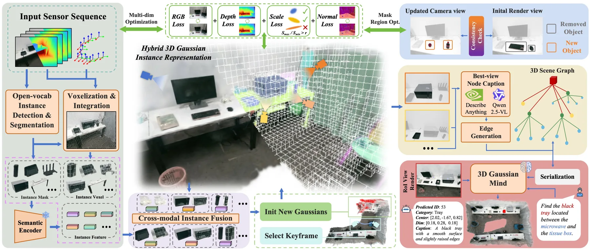
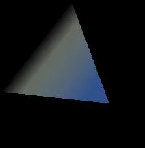
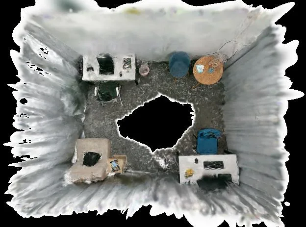
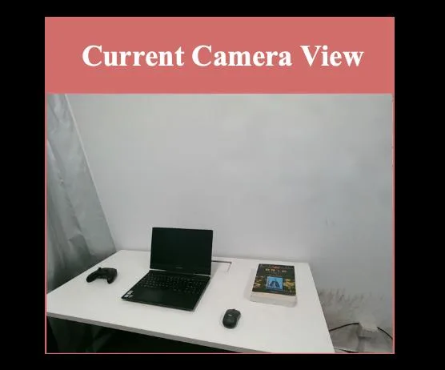
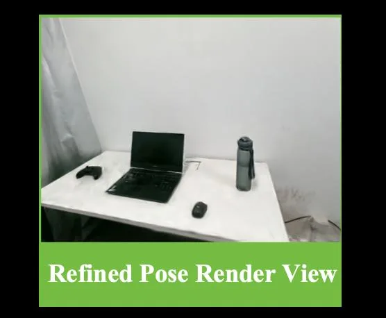

DGSG-Mind：面向长期场景理解与定位的动态 3D Gaussian 场景图DGSG-Mind: Dynamic 3D Gaussian Scene Graphs for Long-Term Scene Understanding and Grounding
主题贴近语义 SLAM、3DGS 地图和长期机器人理解，系统集成度高；后续关键是看代码、数据和真实动态场景表现。
一句话工作总结
把动态 3D Gaussian 地图升级为可推理的实例级语义场景图，用于长期机器人场景理解和 grounding。
摘要
本文尝试把开放词汇语义信息融入动态 3D 场景表达，用于长期具身场景理解。系统将实例感知的 3D Gaussian 动态场景图、概率体素网格、增量语义建图和多模态推理 agent 结合起来，处理跨视角实例关联、动态对象拓扑变化和空间推理不足等问题，并支持在长期变化环境中的 grounding 和重定位。
Integrating open-vocabulary semantic information into dynamic 3D scene representations is essential for long-term embodied scene understanding. However, existing methods often suffer from fragile instance association due to incomplete cross-view cues, while their limited ability to handle object-level topological changes restricts long-term robotic task execution. Moreover, current 3D scene understanding methods either rely on simple feature matching without explicit spatial reasoning or assume offline ground-truth 3D geometry. To address these challenges, we present DGSG-Mind, a hybrid instance-aware 3D Gaussian dynamic scene graph system with an embodied reasoning agent. Our system couples a probabilistic voxel grid with explicit 3D Gaussians to enable robust cross-modal instance fusion and incremental semantic mapping. It handles dynamic changes through Gaussian-based visual relocalization and localized masked refinement guided by geometric-semantic consistency. Built on the instance Gaussian map, DGSG-Mind further constructs a hierarchical scene graph and develops the 3D Gaussian Mind, which integrates structural relations, spatial-semantic information, and visually annotated RoI Gaussian renderings for multimodal reasoning. Extensive experiments show that DGSG-Mind achieves the best zero-shot 3DVG performance among methods operating on self-reconstructed maps, while also delivering strong performance in 3D open-vocabulary semantic segmentation and scene reconstruction. We further deploy DGSG-Mind on real-world robots to demonstrate its target-oriented reasoning and dynamic update capabilities. The project page of DGSG-Mind is available at https://icr-lab.github.io/DGSG-Mind
中文解读摘录
- 日期：2026-05-28
- 链接：arXiv / PDF / Project
- 作者简写：L. Ge, X. Zhu, J. Liu, X. Li
- 领域标签：SLAM / 三维重建 / 3DGS / 语义地图
- 背景/动机：长期机器人场景理解需要把开放词汇语义与动态 3D 表示结合；难点在跨视角实例关联脆弱、动态对象拓扑变化和缺少显式空间推理。
- 主要创新点/工作：混合 instance-aware 3D Gaussian 动态场景图；用概率体素网格与显式 3D Gaussian 做跨模态实例融合和增量语义建图；通过 Gaussian 视觉重定位与局部 masked refinement 处理动态变化；在 Gaussian map 上构建层次场景图并接入 multimodal reasoning。
- 为什么值得关注：把 3DGS 从渲染/重建推进到长期语义 SLAM 和任务级 grounding，适合跟踪其真实机器人部署、动态更新和闭环重定位能力。
图表/页面预览

{kind=link}

{kind=link}

{kind=link}

{kind=link}

{kind=link}
